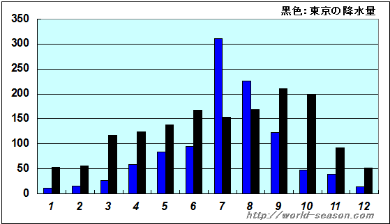

東アジアに位置する社会主義共和制国家。首都は平壌市。朝鮮半島は38度線を境に北側に朝鮮民主主義人民共和国、南側に大韓民国がある。

夏は短いがやや高温で、冬は長く寒冷。夏の気温は日本と同じくらいだが、冬は日本よりも大幅に低い。 (最高/平均/最低）

7、8月に降水量が多くなり、12、1、2月に降水量が少なくなる。
北朝鮮は高山、森林、農地、水源、海洋生態系を含め、多様なバイオームである。(白頭山/金剛山）
ただし近年は環境破壊、自然災害、生態系崩壊の状態にある。
韓国や日本、アメリカなどは国家承認していないが、中国、ロシア、イギリス、ドイツなどは国家承認していて国交がある。中でも中国、ロシアは貿易も盛んで、関係が深い。

日本とかでは当たり前の行為が禁じられていることがある。例を挙げると、テレビを見ることや、車の運転をすること、お酒を飲むこと、髪型のもとが決まっていることなどがあげられる。

北朝鮮はSDGsを達成するため、国内法などを踏まえて独自の目標をつくり全国規模で取り組んでいるとしていて、無償の住宅を各地に建設するなどして市民生活が向上したとされている。